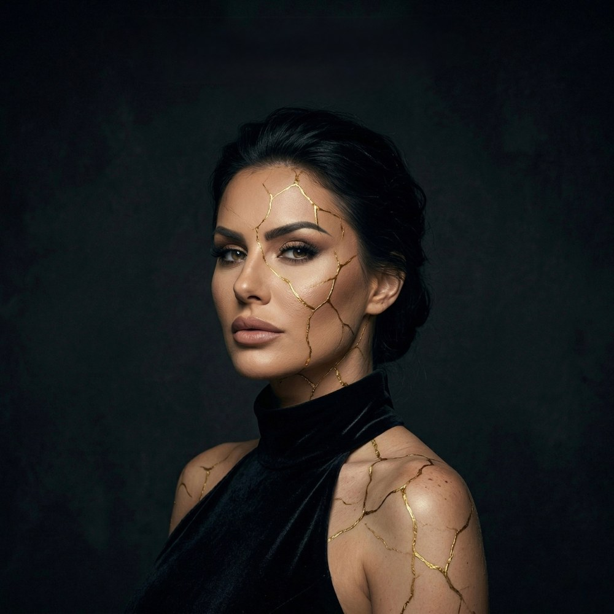
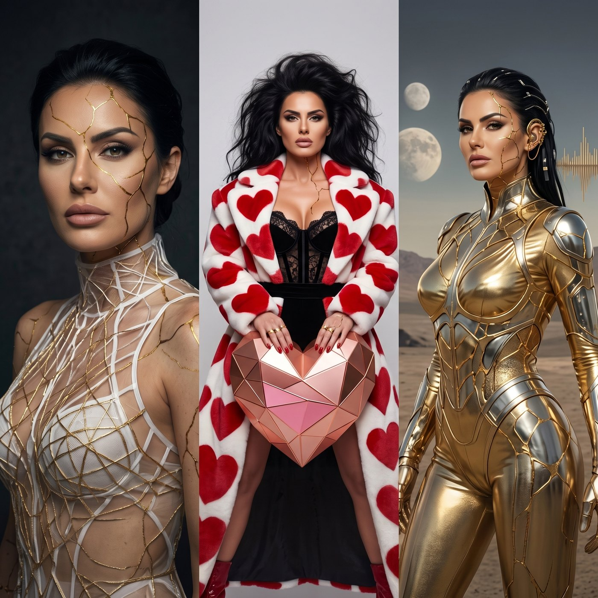
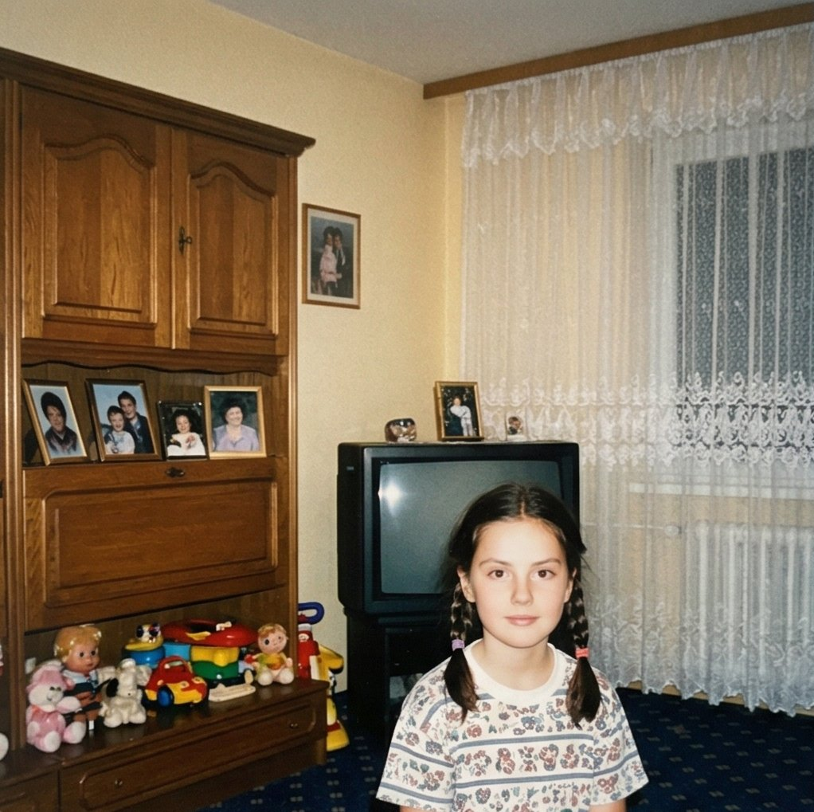
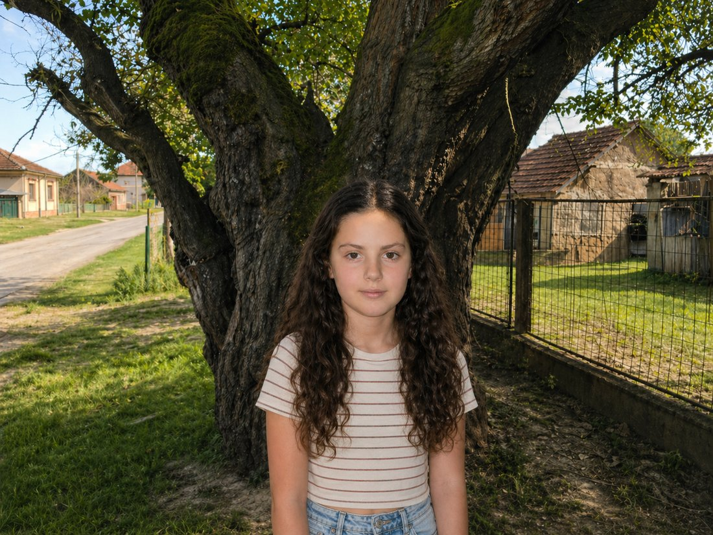
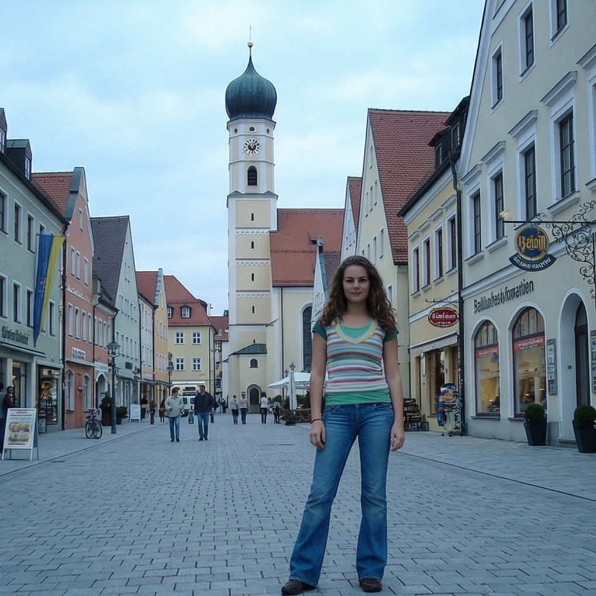
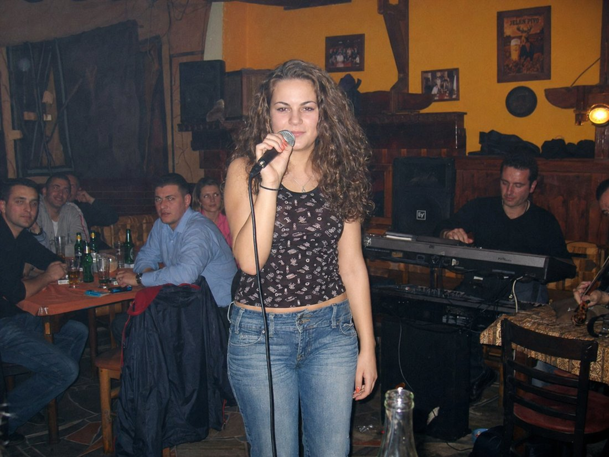
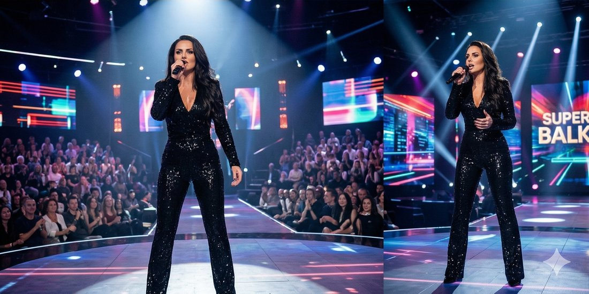
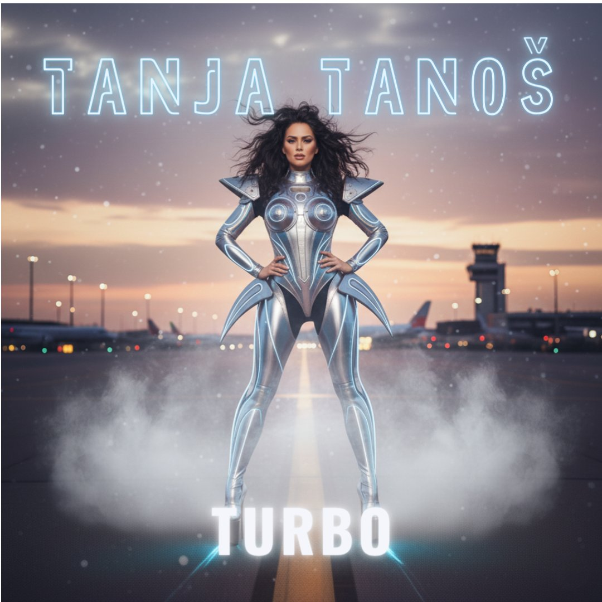
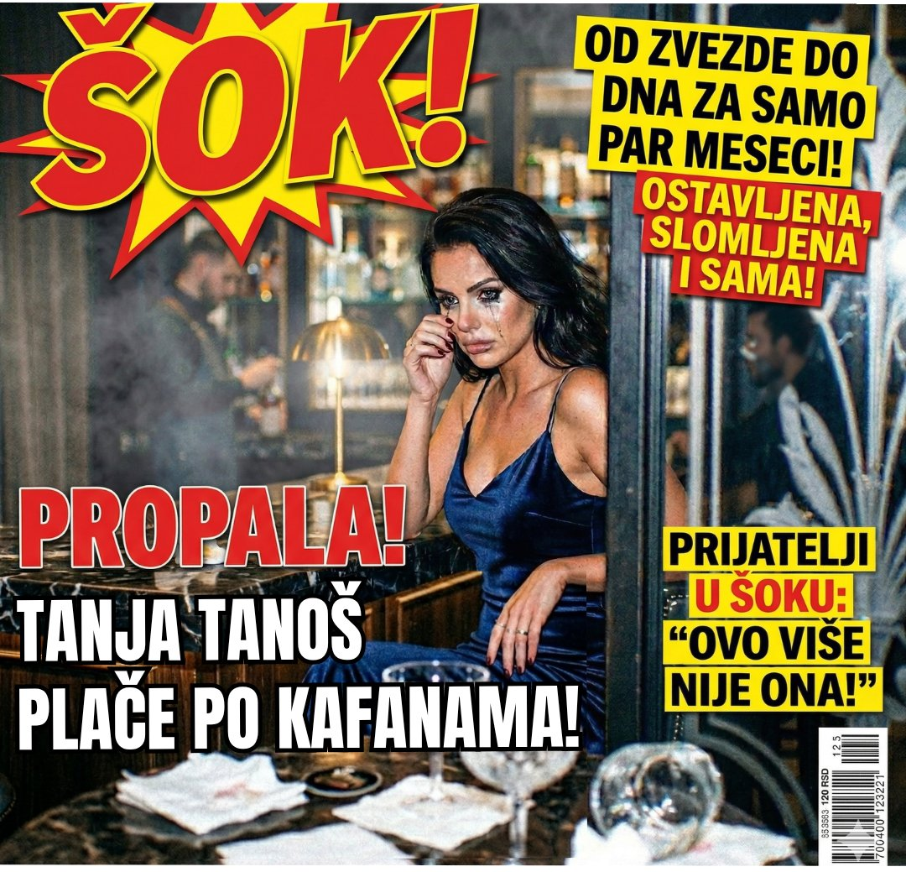
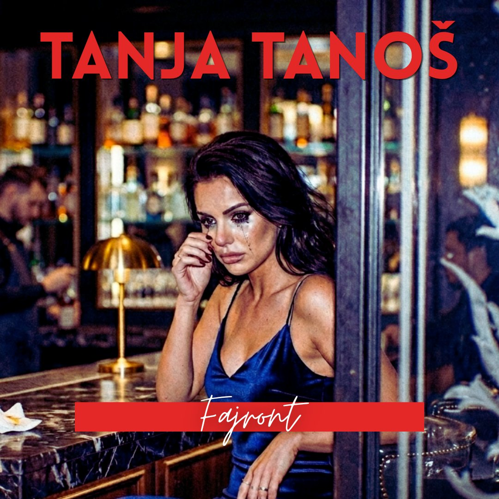

Ko je Tanja

Tanja Tanoš Tanja Tanoš je priznata pevačica i muzičarka folk revival žanra. Njene pesme često istražuju dublje simbolike i savremene teme.
Iza svake kompozicije stoji priča — o emocijama, iskustvima, identitetu i trenucima koji nas teraju na preispitivanje. Njena muzika spaja retro zvuk sa savremenim senzibilitetom, osvajajući publiku samoprihvatanjem i snagom izraza.
Folk revival zvuk, slojevite simbolike i savremene teme spajaju se u izraz koji je istovremeno ukorenjen i moderan.

Tanja Tanoš rođena je 1. avgusta u Melemovom Polju kod Uba, u porodici srednje klase ispunjenoj ljubavlju.
Kao dete, pevala je ispod starog duda, verujući da dud pamti njene pesme i da će ih jednog dana vratiti njoj.

Sa deset godina sa porodicom se seli u Pfaffenhofen an der Ilm u Nemačkoj, gde je završila srednju muzičku školu.

Kao tinejdžerka svirala je i pevala na proslavama i u barovima u kojima se okuplja balkanska dijaspora.

Vrativši se u Srbiju, prijavila se na najpopularnije muzičko TV takmičenje „Superglas Balkana" i brzo postala jedan od omiljenih takmičara.

Kada je organizator, rođak jednog od favorita, pokušao da je diskredituje u finalu dodelivši joj provokativnu pesmu koja nije bila u skladu sa njenim vrednostima, Tanja je promenila tekst na sceni i potom održala govor.
„Kada ti oduzmu pesmu, ostaje ti glas, a kad ti oduzmu glas, ostaje ti istina."
Ta rečenica se i danas prepričava. Iako nije pobedila, postala je heroina publike.
Tanjin uspon do zvezda počinje sa objavljivanjem prvog albuma „Gola leđa", poznatog po dve iskrene i emotivne balade, kao i četiri klupska hita.
Ne postoji diskoteka na Balkanu i u dijaspori u kojoj se nekoliko puta za noć nisu čule njene pesme.
Tanja se nije odmarala, pa je ubrzo nakon izlaska prvog albuma objavila i drugi — „Turbo". Sve su postale hitovi, a Tanja je živela život iz snova, kako poslovno, tako i privatno. Bila je u dugogodišnjoj vezi sa partnerom Leonom iz Ciriha.

Drugi veliki poraz u njenom životu desio se mesec dana pre venčanja, kada je njen dugogodišnji verenik Leon otkazao veridbu.
Nekoliko dana kasnije, fotografisan je u Cirihu kako drži za ruku trudnu devojku — poznatu influenserku.
Taj trenutak slomio je Tanju, ali je postao prekretnica koja je kasnije izrodila njene najpoznatije balade: „Refren bez prstena" i „Balada za slobodne ruke" sa albuma „Fajront". Paparaci su je proganjali u to vreme.

Za cover albuma odabrala je paparaco fotografiju na kojoj je uslikana kako, nakon raskida, plače i pije u jednom beogradskom baru.

Taj album postao je simbol njenog suočavanja s porazom i trijumfa nad njim.
Slušaj i gledaj
Skroluj kroz spotove — levo i desno.
Skroluj za još spotova ▸
Album
1 / 7
Iza zavese
Tanja Tanoš je kreativni projekat koji predstavlja putovanje u paralelnu stvarnost, negde u rane dvehiljadite, u zlatno doba balkanskog pop i folk zvuka. Mesto gde svaka melodija nosi trag nečega što smo već doživeli… ili ćemo tek iskusiti. Uz simbole savremenog života, camp elemente i guilty pleasure melodije, pre svega sa ciljem da se svi dobro zabavimo, nasmejemo i izđuskamo.
Ovaj kanal je spoj AI tehnologije i tradicionalnog pisanja pesama.
Muzika koju čujete kreirana je uz pomoć AI alata, ali nijedna nota nije slučajna. Svaki takt je pažljivo osmišljen, oblikovan i usavršen sa jasnom vizijom. Iza svake pesme stoji vreme, trud, preciznost i posvećen rad.
Svi tekstovi su u potpunosti pisani ručno, inspirisani stvarnim životom, rečenicama i pričama ljudi oko nas – na ulicama, u odnosima, u tišini među ljudima.
Napomena: Tanja Tanoš nije stvarna ličnost — već lik generisan koristeći maštu i AI alate. Sva prava na muziku i tekstove su u vlasništvu kreatora ovog kanala. Kopiranje, ponovno postavljanje ili korišćenje sadržaja na drugim kanalima bez dozvole je strogo zabranjeno.
Pesme su dostupne za kupovinu.
Hajde da se čujemo
Pišite na e-mail ili pratite Tanju na društvenim mrežama.